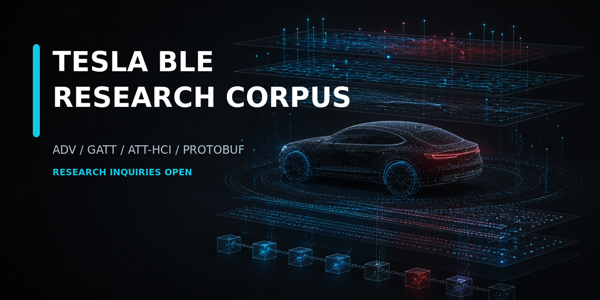

Research inquiries are open
Real-world Tesla BLE evidence for serious protocol research.
A private comparative library spanning advertising, GATT, ATT/HCI, protobuf wire data, field observations and reproducible evidence controls.
Direct contact: teslable.research@gmail.com

What exists
Heterogeneous evidence, documented honestly.
The private library covers 2,048 field-observed Teslas. GATT cases were collected while the corresponding vehicle was being observed in the field.
Depth varies naturally. A case may contain one GATT session or dozens, ADV and Android ScanRecord material, complete HCI or source-bound slices, TPMS, field notes, longitudinal history, or explicit gaps. Missing layers are recorded as missing rather than silently replaced.
ADV and ScanRecord
Advertising structures, payload families, repeated observations and cross-layer timing.
GATT and ATT/HCI
Services, characteristics, descriptors, CCCD state, opcodes, errors and connection timelines.
0x0213 and protobuf
Length-aware parsing, wire trees, repeated values and unknown-field ledgers without invented semantics.
Provenance
Original bytes, SHA-256 manifests, source maps, duplicate accounting, quarantine and explicit gaps.
Market and research validation
Which form would solve a real problem for you?
Deep Evidence Pilot
Ten selected, technically diverse cases for close comparative review.
Parser Validation Pack
Selected evidence, fixtures, expected outputs, edge cases and negative cases.
Anomaly Dossier
One narrow observation with supporting evidence, counterexamples and unresolved questions.
Private Corpus Query
A precise question tested against the wider private library without transferring the full corpus.
Custom Integration
Internal tools or analysis adapted to a partner's formats, workflow and objective.
Evidence discipline
No fluent story in place of proof.
- Application, GATT, ATT/HCI, radio, field and emulation layers remain separate.
- Unknown fields remain
UNKNOWN. - Temporal proximity does not become physical causality.
- A hash proves retained-artifact integrity, not source completeness or semantics.
- Original evidence and derived analysis remain distinguishable.
Rare case inside the pilot
Tesla Keyfob GATT evidence
The selected pilot includes a rare Tesla Keyfob case with repeated Android/nRF Connect connections, MTU negotiation, Tesla service discovery, readable device identity, documented bonding failure and timeout behavior. No matching HCI capture exists, and that gap is stated plainly.
HCI MISSING
Straight answers
Is the raw corpus public?
No. This site is an evidence and capability index. There is no public vehicle list or raw capture download.
Can a qualified researcher receive original material?
An agreed evidence package can be transferred through a controlled channel in its original byte-level form when full fidelity is required. Scope and permitted use are established for each engagement.
Is every case identical?
No. Technical depth varies from one session to longitudinal collections with HCI, ADV, TPMS or field observations. Coverage and gaps are reported case by case.
Is the product format fixed?
No. The current goal is to learn what researchers and tool builders genuinely need before fixing the commercial package.
Tell us the problem, not just that it looks interesting.
What evidence would make this useful in your workflow?
Include your technical problem, required layers, preferred formats, useful case count and intended result.